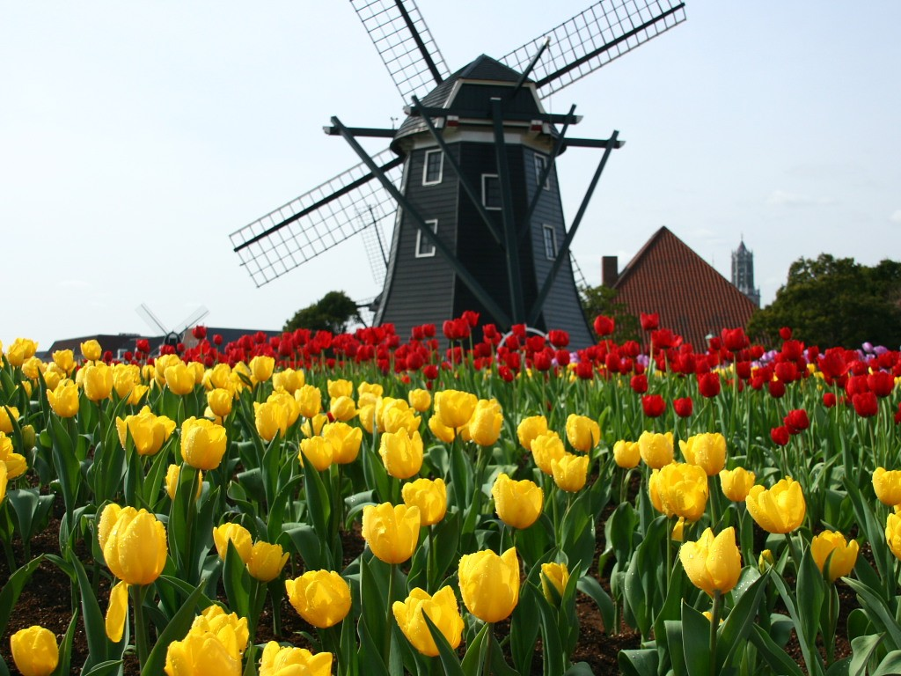
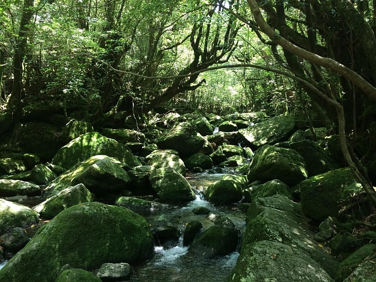
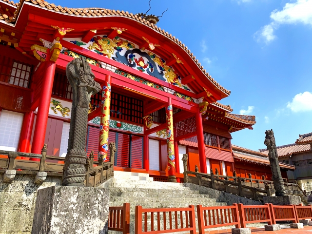

ハウステンボス

ハウステンボスは、オランダの街並みを再現した日本最大級のテーマパークです。美しい運河や風車、四季折々の花々が楽しめるほか、壮大なイルミネーションや多彩なアトラクションも魅力です。敷地内にはホテルやレストランが充実し、季節ごとのイベントも多数開催され、幅広い世代が楽しめます。
住所：〒859-3243 長崎県佐世保市ハウステンボス町１−１
屋久島

屋久島はユネスコ世界自然遺産にも登録されている、豊かな自然に恵まれた観光地です。樹齢千年以上の屋久杉をはじめとする壮大な原生林や、清らかな渓流、多様な動植物が魅力です。一年を通じて雨が多く、神秘的な雰囲気を楽しめます。トレッキングや自然体験を目的に多くの人が訪れています。
住所：鹿児島県熊毛郡屋久島町
サイトURL：https://yakukan.jp/
首里城公園

首里城公園は、かつて琉球王国の王宮であった首里城を中心に整備された歴史公園です。首里城は鮮やかな朱色や独特の建築様式が特長で、2000年に世界遺産「琉球王国のグスク及び関連遺産群」に登録されました。2019年の火災で多くが焼失しましたが、復元作業が進み、多くの観光客に親しまれています。
住所：〒903-0815 沖縄県那覇市首里金城町1−２
サイトURL：https://oki-park.jp/shurijo/